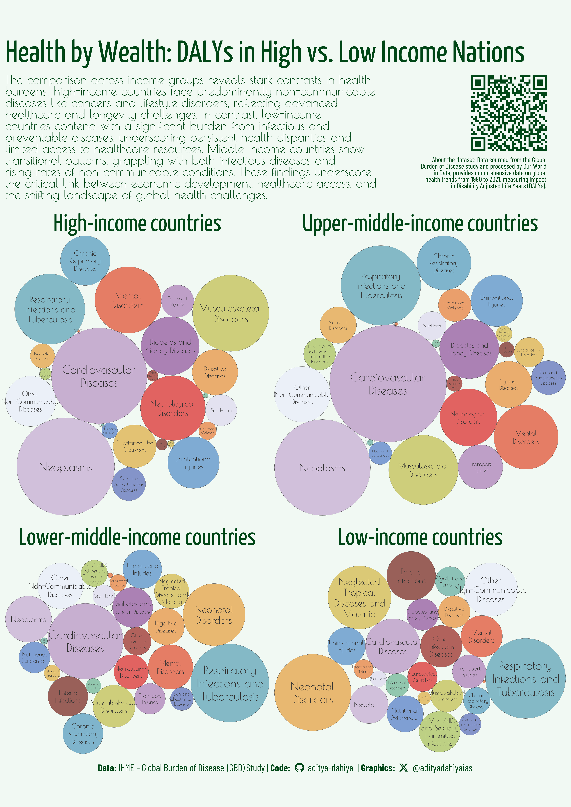
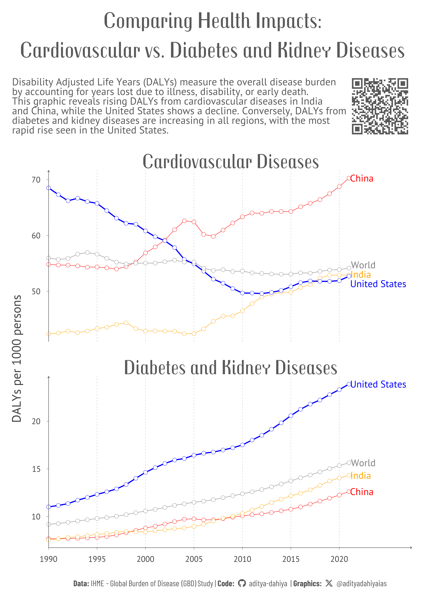

Global Health Burden: Visualizing the Top 25 Causes of Illness
Exploring the Global Burden of Disease: Analyzing Leading Causes of DALYs globally, and across Countries over the years
A4 Size Viz
Our World in Data
Public Health
Author
Aditya Dahiya
Published
June 30, 2024
The dataset from Our World in Data provides comprehensive information on Disability Adjusted Life Years (DALYs) for various health conditions, including communicable, maternal, neonatal, nutritional diseases, injuries, and non-communicable diseases (NCDs). The data is sourced from the IHME’s Global Burden of Disease (GBD) study, which offers a detailed assessment of global health trends, encompassing death and DALY counts and rates for 371 diseases and injuries. The dataset, which spans from 1990 to 2021, was last updated on May 20, 2024, with the next update expected in May 2028. Detailed data can be retrieved from the Global Burden of Disease’s results tool here.
Figure 1: This graphic displays the top 25 health issues in 2021 using packed circles. Each circle’s size (area) corresponds to the impact of the health issue, measured in Disability Adjusted Life Years (DALYs), which account for years of life lost due to illness, disability, or premature death. Different colors represent different types of health conditions, providing a clear visual comparison of their relative burdens.
Comparing DALYs causes across income-groups

Figure 2: This plot compares the major causes of health issues across four income groups: High Income, Upper Middle Income, Lower Middle Income, and Low Income countries. Each facet displays packed circles representing the top 25 health issues, with the size of each circle proportional to the impact measured in Disability Adjusted Life Years (DALYs) and different colors indicating different types of health conditions. This visual allows for a clear comparison of health burdens across economic levels.
Comparing Health Impacts: Cardiovascular and Diabetes DALYs Across Nations
The line graphs illustrate the trends in DALYs per 1000 persons for Cardiovascular Diseases and Diabetes and Kidney Diseases from 1990 to 2021 in the World, United States, India, and China. The data, sourced from the Global Burden of Disease study and population estimates from the United Nations and Our World in Data, reveals that Cardiovascular DALYs are rising in India and China, reflecting increasing lifestyle-related health issues with rising prosperity. In contrast, the United States shows a decline in Cardiovascular DALYs, indicating effective management and treatment strategies, while the global rate remains stable. For Diabetes and Kidney Diseases, the DALYs per 1000 persons are increasing in all regions, with a notably rapid rise in the United States compared to India, China, and the World, highlighting the growing health impact of these conditions, particularly in the U.S.

Figure 3: This graphic displays the trends in DALYs per 1000 persons for Cardiovascular Diseases and Diabetes and Kidney Diseases from 1990 to 2021. The x-axis represents the years, while the y-axis shows the number of DALYs per 1000 persons. Different colors indicate the data for the World (grey), United States (blue), India (orange), and China (red), providing a comparative view of health burdens across these regions.
How I made these graphics?
Getting the data
Code
# Data Import and Wrangling Toolslibrary(tidyverse) # All things tidylibrary(owidR) # Get data from Our World in R# Final plot toolslibrary(scales) # Nice Scales for ggplot2library(fontawesome) # Icons display in ggplot2library(ggtext) # Markdown text supportlibrary(showtext) # Display fonts in ggplot2library(colorspace) # To lighten and darken colourslibrary(patchwork) # Combining plots# Circle Packing Algorithmlibrary(packcircles) # To draw packed circlessearch1 <- owidR::owid_search("burden of disease")df1 <-owid("burden-of-disease-by-cause")popdf <-owid("population-with-un-projections")df2 <- df1 |>as_tibble() |>pivot_longer(cols =-c(year, entity, code),names_to ="indicator",values_to ="value" ) |>mutate(indicator =str_remove( indicator,"Total number of DALYs from " ),indicator =str_remove( indicator,"\n" ) ) |>mutate(indicator =str_to_title( indicator ),indicator =str_replace( indicator,"Hiv/Aids","HIV / AIDS" ),indicator =str_replace_all( indicator,"And","and" ) )
Visualization Parameters
Code
# Font for titlesfont_add_google("Sail",family ="title_font") # Font for the captionfont_add_google("Barlow Condensed",family ="caption_font") # Font for plot textfont_add_google("Poiret One",family ="body_font") # Font for the Strip Text font_add_google("Yanone Kaffeesatz",family ="strip_font")showtext_auto()# Colour Paletteset.seed(41)mypal <- paletteer::paletteer_d("khroma::smoothrainbow")mypal <-sample(mypal, 25, replace = F)# Background Colourbg_col <-"#F1F9F3FF"text_col <-"grey20"text_hil <-"#004616FF"# Base Text Sizebts <-11plot_title <-""plot_subtitle <-""data_annotation <-"About the Data: "# Caption stuff for the plotsysfonts::font_add(family ="Font Awesome 6 Brands",regular = here::here("docs", "Font Awesome 6 Brands-Regular-400.otf"))github <-""github_username <-"aditya-dahiya"xtwitter <-""xtwitter_username <-"@adityadahiyaias"social_caption_1 <- glue::glue("<span style='font-family:\"Font Awesome 6 Brands\";'>{github};</span> <span style='color: {text_hil}'>{github_username} </span>")social_caption_2 <- glue::glue("<span style='font-family:\"Font Awesome 6 Brands\";'>{xtwitter};</span> <span style='color: {text_hil}'>{xtwitter_username}</span>")plot_caption <-paste0("**Data:** IHME - Global Burden of Disease (GBD) Study | ","**Code:** ", social_caption_1, " | **Graphics:** ", social_caption_2 )rm(github, github_username, xtwitter, xtwitter_username, social_caption_1, social_caption_2)
df2 |>distinct(indicator) |>pull() |>paste0(collapse =", ")plotdf2021 <- df2 |>filter(entity =="World") |>filter(year ==2021) |>select(-year, -entity, -code) |>mutate(indicator =str_wrap( indicator,width =15 ) )# Create the layout using circleProgressiveLayout()# This function returns a dataframe with a row for each bubble.# It includes the center coordinates (x and y) and the radius, which is proportional to the value.packing <-circleProgressiveLayout( plotdf2021$value,sizetype ="area" )plotdf2021 <-bind_cols( plotdf2021, packing )# Ensure that the radius is proportional to the value. # A linear relationship is not desired, # as the AREA must be proportional to the value.# ggplot(# data = plotdf2021,# mapping = aes(# x = radius,# y = value# )# ) +# geom_point()# The next step is to convert a center point and radius into # the coordinates of a circle that is approximated by # multiple straight lines.plotdf2021_circles <-circleLayoutVertices( packing,npoints =100) |>as_tibble() |>mutate(id =as_factor(id))bts =80g <-ggplot() +geom_polygon(data = plotdf2021_circles,mapping =aes( x, y, group = id,fill = id ),colour = text_col,alpha =0.9,linewidth =0.2 ) +# Add text at center of each bubblegeom_text(data = plotdf2021,mapping =aes( x, y,label = indicator,size = value ),colour = text_col,family ="body_font",lineheight =0.3 ) +scale_size_continuous(range =c(bts /15, bts /2) ) +# Equal coordinates for circlescoord_equal() +labs(title ="Circles of Suffering:\nLeading Causes of Health Issues",subtitle =str_wrap("Highlighting the leading global health problems of 2021, with each circle sized by Disability Adjusted Life Years (DALYs). A DALY accounts for years of life lost to poor health, disability, or premature death.", 80),caption = plot_caption ) +scale_fill_manual(values = mypal) +theme_void(base_family ="body_font",base_size = bts ) +theme(legend.position ="none",plot.title =element_text(colour = text_hil,family ="title_font",hjust =0.5,margin =margin(10,0,0,0, "mm"),lineheight =0.35,size = bts *3 ),plot.subtitle =element_text(colour = text_hil,hjust =0.5,lineheight =0.35,margin =margin(5,0,0,0, "mm"),size = bts *1.2 ),plot.caption =element_textbox(colour = text_hil,hjust =0.5,family ="caption_font",margin =margin(0,0,10,0, "mm") ),plot.margin =margin(0,0,0,0, "mm") )ggsave(filename = here::here("data_vizs", "owid_daly_causes.png"),plot = g,height =500,width =400,units ="mm",bg = bg_col)
Data Wrangling and Faceted Visualization shown in Figure 2: an A4 size info-graphic comparing countries
Code
# Create a function to reproduce graph for each countryplot_circles_year <-function(selected_year, selected_country, bts){ x1 <- df2 |>filter(year == selected_year) |>filter(entity == selected_country) |>mutate(indicator =str_wrap( indicator,width =15 ) ) packing <-circleProgressiveLayout( x1$value,sizetype ="area" ) x1 <-bind_cols( x1, packing ) x1c <-circleLayoutVertices( packing,npoints =100 ) |>as_tibble() |>mutate(id =as_factor(id))ggplot() +geom_polygon(data = x1c,mapping =aes( x, y, group = id,fill = id ),colour = text_col,alpha =0.7,linewidth =0.1 ) +# Add text at center of each bubblegeom_text(data = x1,mapping =aes( x, y,label = indicator,size = value ),colour = text_col,family ="body_font",lineheight =0.3 ) +scale_size_continuous(range =c(bts /20, bts /3) ) +scale_x_continuous(expand =expansion(0)) +scale_y_continuous(expand =expansion(0)) +coord_equal(clip ="off" ) +labs(title = selected_country ) +scale_fill_manual(values = mypal) +theme_void(base_family ="body_font",base_size = bts ) +theme(legend.position ="none",plot.title =element_text(margin =margin(5,0,0,0, "mm"),size = bts *2,hjust =0.5,colour = text_hil,family ="strip_font" ),plot.margin =margin(2,2,2,2, "mm") )}p_data <-ggplot() +annotate(label =str_wrap("About the dataset: Data sourced from the Global Burden of Disease study and processed by Our World in Data, provides comprehensive data on global health trends from 1990 to 2021, measuring impact in Disability Adjusted Life Years (DALYs).", 50),geom ="text",x =0, y =0, hjust =1,size = bts /5,colour = text_hil,family ="caption_font",lineheight =0.25 ) +theme_void()# QR Code for the ploturl_graphics <-paste0("https://aditya-dahiya.github.io/projects_presentations/projects/",# The file name of the current .qmd file"owid_daly_causes",".qmd")# remotes::install_github('coolbutuseless/ggqr')# library(ggqr)plot_qr <-ggplot(data =NULL, aes(x =0, y =0, label = url_graphics) ) + ggqr::geom_qr(colour = text_hil, fill = bg_col,size =2.2 ) +# labs(caption = "Scan for the Interactive Version") +coord_fixed() +theme_void() +theme(plot.background =element_rect(fill =NA, colour =NA ),plot.caption =element_text(hjust =0.5,margin =margin(0,0,0,0, "mm"),family ="caption_font",size = bts/1.8 ) )bts =80g <- patchwork::wrap_plots(plot_circles_year(2021, "High-income countries", bts),plot_circles_year(2021, "Upper-middle-income countries", bts),plot_circles_year(2021, "Lower-middle-income countries", bts),plot_circles_year(2021, "Low-income countries", bts) ) +inset_element(p = plot_qr,left =0.6, right =1,bottom =2.5, top =2.9,align_to ="full" ) +inset_element(p = p_data,left =0.5, right =1.35,bottom =2.2, top =2.7,align_to ="full" ) +plot_annotation(title ="Health by Wealth: DALYs in High vs. Low Income Nations",subtitle =str_wrap("The comparison across income groups reveals stark contrasts in health burdens: high-income countries face predominantly non-communicable diseases like cancers and lifestyle disorders, reflecting advanced healthcare and longevity challenges. In contrast, low-income countries contend with a significant burden from infectious and preventable diseases, underscoring persistent health disparities and limited access to healthcare resources. Middle-income countries show transitional patterns, grappling with both infectious diseases and rising rates of non-communicable conditions. These findings underscore the critical link between economic development, healthcare access, and the shifting landscape of global health challenges.", 70),caption = plot_caption,theme =theme(plot.title =element_text(colour = text_hil,family ="strip_font",size = bts *2.5,margin =margin(10,0,5,0, "mm") ),plot.subtitle =element_text(lineheight =0.25,family ="body_font", colour = text_hil,size = bts *1,hjust =0 ),plot.caption =element_textbox(colour = text_hil,family ="caption_font",size = bts *0.8,hjust =0.5,margin =margin(5,0,5,0, "mm") ),plot.background =element_rect(fill ="transparent",colour ="transparent" ),panel.background =element_rect(fill ="transparent",colour ="transparent" ),plot.title.position ="plot" ) )ggsave(filename = here::here("data_vizs", "a4_owid_daly_causes.png"),plot = g,height =297*2,width =210*2,units ="mm",bg = bg_col)
Comparing the rising and falling health burdens of cardiovascular and diabetes diseases across the world, USA, India, and China from 1990 to 2021, shown in Figure 3
popdf1 <- popdf |>as_tibble() |>select(entity, code, year, `Population - Sex: all - Age: all - Variant: estimates`) |> janitor::clean_names() |>rename(population = population_sex_all_age_all_variant_estimates)df3 <- df2 |>left_join(popdf1)sel_cons <- popdf1 |>filter(!is.na(code)) |>filter(year ==2021) |>slice_max(population, n =4) |>pull(entity)df4 <- df3 |>filter(indicator %in%c("Cardiovascular Diseases", "Diabetes and Kidney Diseases")) |>filter(entity %in% sel_cons) |>mutate(perc_cwd =1000* value / population)plot_qr <-ggplot(data =NULL, aes(x =0, y =0, label = url_graphics) ) + ggqr::geom_qr(colour = text_hil, fill ="white",size =2.2 ) +# labs(caption = "Scan for the Interactive Version") +coord_fixed() +theme_void() +theme(plot.background =element_rect(fill =NA, colour =NA ),plot.caption =element_text(hjust =0.5,margin =margin(0,0,0,0, "mm"),family ="caption_font",size = bts/1.8 ) )bts =90g <- df4 |>ggplot(mapping =aes(x = year,y = perc_cwd,colour = entity ) ) +geom_line(aes(linewidth = (entity =="United States")) ) +geom_point(#aes(stroke = (entity == "United States")),pch =21,fill ="white",size =5 ) + ggrepel::geom_text_repel(data = df4 |>filter(year ==2021),mapping =aes(label = entity),hjust =0,nudge_x =0.25,direction ="y",family ="body_font",min.segment.length =unit(10, "mm"),size = bts /3 ) +scale_linewidth_manual(values =c(0.5, 1.5) ) +scale_x_continuous(expand =expansion(c(0,0.2)),breaks =seq(1990, 2020, 5) ) +scale_colour_manual(values =c("red", "orange", "blue", "grey50") ) +coord_cartesian(clip ="off") +facet_wrap(~ indicator, scales ="free_y", nrow =2) +labs(title ="Comparing Health Impacts:\nCardiovascular vs. Diabetes and Kidney Diseases",subtitle =str_wrap("Disability Adjusted Life Years (DALYs) measure the overall disease burden by accounting for years lost due to illness, disability, or early death. This graphic reveals rising DALYs from cardiovascular diseases in India and China, while the United States shows a decline. Conversely, DALYs from diabetes and kidney diseases are increasing in all regions, with the most rapid rise seen in the United States.", 75),caption = plot_caption,x =NULL, y ="DALYs per 1000 persons" ) +theme_classic(base_family ="body_font",base_size = bts ) +theme(plot.margin =margin(10,10,10,10, "mm"),legend.position ="none",axis.line =element_line(arrow =arrow(length =unit(2, "mm")),colour = text_col,linewidth =0.5 ),strip.background =element_blank(),panel.grid.major.x =element_line(linetype =2,linewidth =0.5,colour =lighten(text_col, 0.75) ),strip.text =element_text(family ="title_font",colour = text_hil,margin =margin(0,0,0,0,"mm"),size = bts *2 ),plot.caption =element_textbox(hjust =0.5, family ="caption_font",colour = text_hil ),axis.title.y =element_text(colour = text_col,size =1.2* bts ),axis.text =element_text(colour = text_col ),axis.ticks =element_line(linewidth =0.3 ),axis.ticks.length =unit(2, "mm"),plot.title =element_text(colour = text_hil,size =2.2* bts,lineheight =0.35,family ="title_font",hjust =0.5 ),plot.subtitle =element_text(lineheight =0.25,colour = text_hil,hjust =0 ),plot.title.position ="plot" )g2 <- g +inset_element(p = plot_qr,left =0.8, right =1,bottom =0.75, top =0.9,align_to ="full" ) +plot_annotation(theme =theme(plot.background =element_rect(fill ="transparent",colour ="transparent" ),panel.background =element_rect(fill ="transparent",colour ="transparent" ) ) )ggsave(filename = here::here("data_vizs", "a4_owid_daly_cvddb.png"),plot = g2,height =297*2,width =210*2,units ="mm",bg ="white")
Save a thumbnail
Code
library(magick)# Saving a thumbnail for the webpageimage_read(here::here("data_vizs", "owid_daly_causes.png")) |>image_resize(geometry ="400") |>image_write(here::here("data_vizs", "thumbnails", "owid_daly_causes.png"))